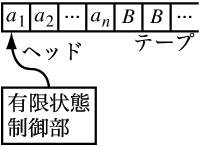
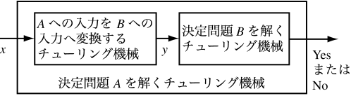

アルゴリズムの複雑さ，問題の複雑さを定義し， 同程度に複雑な問題のグループ分けを定義したい．
チューリングマシンとよばれる計算機のモデルを定義し， 計算とは何か，問題とは何かについて議論する． つぎに問題の複雑さの尺度を導入し， 問題を複雑さでグループ分けする場合の有名なグループである P と NP を紹介し，重要な未解決問題である P = NP 問題を紹介する．
一般に計算とは，コンピュータなどの計算機に入力を与 え，出力を得る過程という意味で使われる． 正しい出力を得る計算が存在するかどうか，すなわち 計算が可能かどうか，また可能であればどれぐらいの時間がかか るのかに興味があるが，これらは計算を行う機械として何を使うかによって変化 する． いろいろな問題，アルゴリズムに対する計算を比較して議論する 場合，計算を行う機械のモデルを統一しておくことが不可欠である． ある計算機モデルのもとで計算に必要な時間， 記憶領域などの量を議論する分野は 計算量理論とよばれている．
計算量理論において， チューリング機械 が標準的な計算モデルとして使われる．チューリング機械のうち， 決定性チューリング機械 について説明する． 決定性チューリング機械を拡張したモデルである非決定性チューリング機械につ いては後述する． 以降では特に断らない限り決定性チューリング機械のこと を単にチューリング機械とよぶ．チューリング機械は図 1に示される ような 有限状態制御部 と一個の ヘッド を介して読み書きされる一本の テープ からなる計算機モデルである．

図 1: チューリング機械
テープは一文字だけを書くことができる セル が左右に連続したものである． チューリング機械のテープには左端のセルが存在するが，右には無限に続くも のとする．セルに書くことができる文字は，入力シンボルとよばれる 有限集合の要素の文字か，空白文字と呼ばれる文字である． 有限状態制御部は有限個の状態をもち，その中に開始状態を一つ， 終了状態をいくつかもつ．チューリング機械は開始状態から動作を開始し，いず れかの終了状態に遷移すると動作を止めるものとする． 有限状態制御部はテープへの ヘッドを 1 個もち，一度に参照できる文字は ヘッドが指している文字のみである． 現在の状態とヘッド上の文字からどのような動作を行うかを 一意に定める 動作関数 をもつ．
チューリング機械は 1 ステップ内に以下の 3 つの動作を行う．
図 1 では a1,a2,...,an はそれぞれ入力シンボルのうちいずれ かで，B が空白文字である． チューリング機械に入力が書き込まれたテープが与えられると， 開始状態でヘッドがテープの左端にある状態から 動作関数に従って状態遷移とテープの書き換えが始まり，終了状態に到達すれば 停止する．ここでテープに残された文字が計算結果となる．
チューリング機械は一見すると現代の計算機とはかけ離れたモデルにみえるが， ほとんどの計算機の動作を効率的にシミュレートすることができる． 例えば現代の計算機に近いモデルとして それぞれに整数を記憶することのできる有限個のレ ジスタと無限個のメモリに 1 ステップでアクセスできる計算機の モデルである RAM (Random access machine) を考える． RAM を用いて効率的に出力が得られる問題は， チューリング機械のみを用いてもシミュレーションを行うことにより， 効率的に出力を得ることができることが知られている． チューリング機械によるモデル化は 実際の計算速度を反映しつつ個別の計算機の速度差や構成に依存せずに 問題やアルゴリズムの難しさを比較することができるため計算のモデルとして広 く使われている．
計算機による計算は問題を解くために行われる．ここで は問題を定式化する．入力から数値を計算して出力する問題もあるが，ここでは 簡単のため，答えが Yes か No のいずれかである 決定問題 のみを考える． 決定問題は判定が Yes となる入力の集合として定義できる． 例えば 2 進数で表現されたある整数 x を入力として，x が素数であれば Yes，そうでなければ No である素数判定問題は決定問題であり， 素数からなる集合として問題を定義できる． 素数からなる集合に入力が属するかどうかの判定を行うことが この決定問題を解くこととなる．
あるチューリング機械がある決定問題について，有限時間で正しい解を 出力して終了するとき， そのチューリング機械はその決定問題を 解く という．ここでは決定問題を解くチューリング機械を， その決定問題を解く決定性アルゴリズムと呼ぶ． 以下では決定性アルゴリズムのことを単にアルゴリズムと呼ぶ． たとえば素数判定問題であれば，入力された値に対して除数の候補は有 限であるから，順番にすべての除数の候補で割ってゆき， 一度でも割り切れたら Yes に対応するテープシンボルを出力して終了状態へ遷移， 一度も割り切れなければ No に対応するテープシンボルを出力して終了状態へ遷 移するチューリング機械，すなわちアルゴリズムで解くことができる．
では，どんな決定問題に対してもそれを解くアルゴリズムが存在するの だろうか．この素朴な疑問に対し，チューリングらにより驚くべき 結果が示された． 解くアルゴリズムが存在しない問題が存在することが示されたのである． ここで問題は正しく定義できる決定問題であることに注意されたい． 例えば任意のプログラムが入力として与えられ， そのプログラムが無限ループに陥る場合があるかどうかを 判定する問題は，答えは一意に決まるため正しく定義された問題である． ところがこの問題を解くアルゴリズムは存在しないことが知られている．
解くアルゴリズムが存在する決定問題を 決定可能, 存在しない決定問題を 決定不能 という．本章では以降，決定可能な問題についてのみ議論する．
ある問題を解くアルゴリズムが多数存在するとき， どのアルゴリズムを選択すべきかの評価基準があれば都合がよい． 実用的アルゴリズムの実行時間は，入力が大きくなると増大するものがほとんど で，入力として与えられる値のサイズ(桁数や文字数)の増加に対して実行時間が どう変化するのかについて興味がある場合が多い． このため与えられる入力のサイズの関数として，チューリング機械が必要とする 計算ステップ数を表現したい． 同じサイズの入力でも内容が異なれば計算ステップ数が異なる可能性があるが， ある入力サイズに対する計算時間として最もステップ数 の大きなものを 最悪時実行時間 とよぶ． 最悪時実行時間が任意の入力に対する計算時間の上限を与えることや 解析が比較的簡単であることなどから 入力のサイズに対する最悪時実行時間の関数を用いてアルゴリズムの効率を評価 することが多い． これをアルゴリズムの複雑さと呼ぶ．
あるアルゴリズムについて，入力サイズが n のとき最悪時実行時間の上界 が n の多項式関数で表されるならそのアルゴリズムを 多項式時間アルゴリズム という． 多項式時間アルゴリズムであるかどうかで アルゴリズムの複雑さを大きく分けることが多い． 多項式時間でないアルゴリズムは入力が大きくなると実行時間が実用的でなく なるためである．多項式時間アルゴリズムを効率の良いアルゴリズムとよぶこと がある．
問題自体の複雑さを表すには，その問題を解くアルゴリズムの複雑さを用い る．ただし，同じ問題を解くアルゴリズムは複数あるため， 最も効率の良いもので代表する． ここでも多項式時間かどうかで複雑さを大きく分類する．
問題を解く決定性チューリング機械の多項式時間アルゴリズムが存在する問題の集合を P とよぶ．P の要素として知られている問題は， 言い替えると効率の良い解の求め方が知られている問題である．
計算機科学の分野で頻繁に現れる問題で，P に属すことが証明され ていない， すなわち解く決定性チューリング機械の 多項式時間アルゴリズムが見つかっていない問題が多 数ある．例えば，いくつかの都市と都市間の移動のコストが与えられたとき， すべての都市を 1 度だけ訪問してもとの都市に戻ってくる経路のうち合計移動 コストが最小のものを求める問題は TSP(TravelingSalesperson Problem) として知られている．TSP から派性した決定問題， 都市と移動コストの他に合計コストの許容値 k を入力とし 合計コスト k 以下ですべての都市を 1 度だけ訪問して元の都市 に戻れるかどうかを判定する問題をここでは D-TSP と呼ぶことにする． D-TSP を解く決定性チューリング機械の多項式時間アルゴ リズムは見つかっていないため D-TSP が P に属するかどうかは知られて いない．
D-TSP は計算機のモデルを以下で説明する 非決定性チューリング機械 に変更すると，多項式時間で解くアルゴリズムが存在する． 非決定性チューリング機械は決定性チューリング機械の定義のうち動作関数の定 義を変更したもので，現在の状態とヘッド上の文字からどのような動作を行うか についてただ一つではなく有限複数個の動作を許すものである． 動作の可能性が複数あるため，計算開始からの選択の系列により非決定性チュー リング機械の計算結果は異なる． 非決定性チューリング機械がある決定問題について， どんな動作の選択の系列に従っても 高々入力サイズの多項式のステップで停止し， Yes と答えるべき入力に対してのみ Yes を出力して終了状態へ遷移する 動作の選択の系列が存在するとき， その非決定性チューリング機械はその決定問題を 多項式時間で解くという． 非決定性チューリング機械で多項式時間で解ける問題のグループを NP と呼ぶ． D-TSP は，最初に非決定的動作により経路を一つ決め， その経路の移動コストの和が許容値 k 以下かどうかをチェックする非決定性チューリング機械で 多項式時間で解くことができる． すなわち，D-TSP は NP に属する問題である．
非決定性チューリング機械は決定性チューリング機械を含むので P が NP の部分集合であることは自明である． では P に属さず，NP に属する問題は存在するのであろう か．これが有名な P = NP 問題であり，計算機科学の分野で最も重 要な未解決問題の一つである． NP は 長年にわたって解く多項式時間決定性チューリング機械 のアルゴリズムが発見されず P に属することが確認できない問題を含む ため P ≠ NP と考えられることが多い． これを証明するためには NP に属する問題のうちひとつが P に属さないことを示せばよいのだが，NP の問題 で P に属さない，すなわちそれを解く決定性の多項式時間アルゴリズムが 存在しないことが証明された例はない．
次に， P = NP 問題に関連して重要な問題の集合である NP-complete について説明する． ある決定問題 A の入力 x を入力として次の条件を満たす y を多項式時間 で出力する決定性チューリング機械が存在するとき，決定問題 A は決定問題 B に多項式時間還元可能 という．
決定問題 A が B に多項式時間還元可能であれば，図 2 の合成チューリング機械で決定問題 A を解くことができる．

図 2: 問題 A を解く合成チューリング機械
決定問題 A が B に多項式時間還元可能であれば，B を解く効 率の良いアルゴリズムが存在すれば A も効率良く解ける． 直感的には，B が A よりも少なくとも同程度には難しいことを示して いると考えることができる．
NP の中で最も難しい問題の集合を考える．すなわち， NP に属する問題 X について， すべての NP の問題が X に多項式時間還元可能であるとき X は NP-complete であるという． 先述の D-TSP など計算機科学において重要な多くの問題が NP-complete 問題であることが知ら れている．
NP-complete 問題は P ≠ NP, P = NP のどちらを証明するにも重要である． P ≠ NP を証明する場合， NP の中のある問題を選び， それが P に属さないことを示せばよいが， 仮に P ≠ NP であってもすべての NP 問題が P に属さないわけではないため， 選んだ問題が実際には P であったならこの方針では証明できない． P ≠ NP であればすべての NP-complete 問題が P に属さないので(章末問題 3) NP-complete の中か ら P に属さない問題を捜し出すことが有望な戦略となる． 逆に P = NP を証明する場合は， NP-complete の定義より ある NP-complete 問題が P に属することを示せばよい． これらの事実から， NP-complete 問題のどれかについて 決定性チューリング機械の多項式時間アルゴリズムを 発見するなどの方法で多項式時間アルゴリズムが存在することを証明するか， 逆に多項式時間アルゴリズムが存在しないこ とを証明することが P = NP 問題解決の鍵となると考えられ 研究されてきた．
NP-complete の条件から，"NP に属する" という条件を除いた 集合をNP-hard と呼ぶ．長年にわたって研究さ れても NP-complete や NP-hard な問題に対して決定性チューリング機械については 多項式時間アルゴリズムが発見されていないので， P ≠ NP である， すなわち NP-complete や NP-hard な問題はどう工夫しても多項式時間では計算できないという前提 で議論する場合が ある．この場合， NP-complete や NP-hard は 効率の良いアルゴリズムが存在しない難しい問題の集合の意味で使わ れることがある．このような使い方をする場合， まだ証明されていない前提を置いていることに注意する必要がある．
Hopcroft, Ullman, "Introduction to Automata Theory, Languages, and Computation," Addison Wesley, 1979.